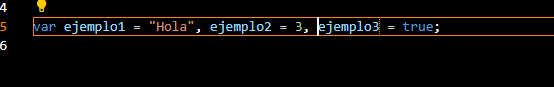

¿Qué etiqueta se utiliza para insertar código JavaScript en HTML?
La etiqueta script.
¿Qué ventajas tiene incrustar el código JavaScript en un archivo
externo?
El poder separar el código funcional de la estructura de la web.
¿Qué extensión suelen tener los archivos que contienen código
JavaScript?
La extensión .js.
¿Cómo se referencia un archivo .js en HTML?
Indicando la ruta del archivo, ya sea mediante la ruta absoluta o la
relativa.
¿Qué debe hacer si el archivo JavaScript se encuentra en otro
directorio?
Usar la ruta absoluta.
¿Qué etiqueta se usa para mostrar un mensaje si el navegador no
soporta JavaScript?
La etiqueta <noscript>.
¿Qué diferencia hay al insertar JavaScript en XHTML?
Tienes que encapsular el código JavaScript en una etiqueta CDATA
porque XML es intolerantes a los elementos que no comienzan por < y
a las entidades HTML que no comienzan por &.
¿Qué es la ofuscación de código y por qué se utiliza?
Es una técnica para hacer menos legible el código. Se usa porque el
código JavaScript es visible para todo el mundo y, por tanto
susceptible de ser robado.
¿Cómo se llama el lenguaje que se menciona en el texto?
JavaScript.
¿Qué nombre le dio Microsoft a JavaScript?
JScript.
¿Por qué Microsoft usó el nombre Jscript?
Para evitar problemas relacionados con la marca (ni tenían derechos
sobre el nombre JavaScript, y podrían tener problemas por la parte de
"Java").
¿Qué problema surgió con la versión de JScript de Microsoft?
Su versión de JScript tenía incompatibilidades en varios navegadores.
¿Qué es el DOM y por qué fue diseñado?
El DOM (Modelo de Objetos del Documento) es una representación
estructurada de un documento HTML o XML que permite a los lenguajes de
programación (como JavaScript) acceder y manipular el contenido, la
estructura y el estilo del documento, y fue creado por el W3C
justamente para evitar las incompatibilidades que tenía JScript entre
navegadores.
¿Qué navegadores incorporaron el DOM desde su primera versión?
Internet Explorer 6, Netscape Navigator, Opera 7 y Mozilla Firefox.
¿Qué estándar regula el lenguaje JavaScript desde 1997?
El estándar ECMA.
¿Qué documento detalla las especificaciones del estándar ECMA?
El documento ECMA-262.
¿Qué relación tiene JavaScript con Java?
No tienen relación alguna, pese a que JavaScript adopte nombres y
convenciones similares.
¿Quién desarrolló originalmente JavaScript y con qué nombre?
JavaScript fue originalmente desarrollado por Brendan Eich, de
Netscape, con el nombre de Mocha.
Usa la función alert para enseñar el mensaje Hola Mundo
En el un archivo y declara varias variables en una sola linea

¿Que caracteres y nombres están prohibidos como nombre de variables?
No podremos usar palabras reservadas, ni símbolos de puntuación en el
medio de la variable, ni la variable podrá contener espacios en
blanco.
Crea un ejemplo para cada tipos de datos (Crea una tabla en html5 en
el documento html)
Tipo de dato
Ejemplo
Usa la función typeof para mostrar el tipo de los códigos
Tipo de dato
Typeof
Ejecuta estos datos y muestralos en un documento html
4+4 =
"4"+4 =
a+c =
b+c =
2.9e3 +1 =
2.9e3 +b =
2.9e3+a =
Usa la función parseFloat y parseInt para convertir explícitamente los
valores 2.9e3, 30.1e-3, 0,000000004 , 0,6, 3000000 , 301231000
2.9e3
30.1e-3
0,000000004
0,6
3000000
301231000
usa la función length para hallar el tamaño de las cadenas "123456"
La longitud de la cadena "123456" es de
caracteres
Declara varias variables con const e intenta cambiarlas y visualizalas
con un alert que pasa?
Declara varias variables con var dentro de un bloque if al principio e
intenta acceder a ellas para mostrarlas dentro del bloque y fuera del
bloque con un alert que pasa?
Realiza el mismo ejercicio anterior pero con varias variables con let
dentro de un bloque if . Se pueden ver el contenido de las variables.